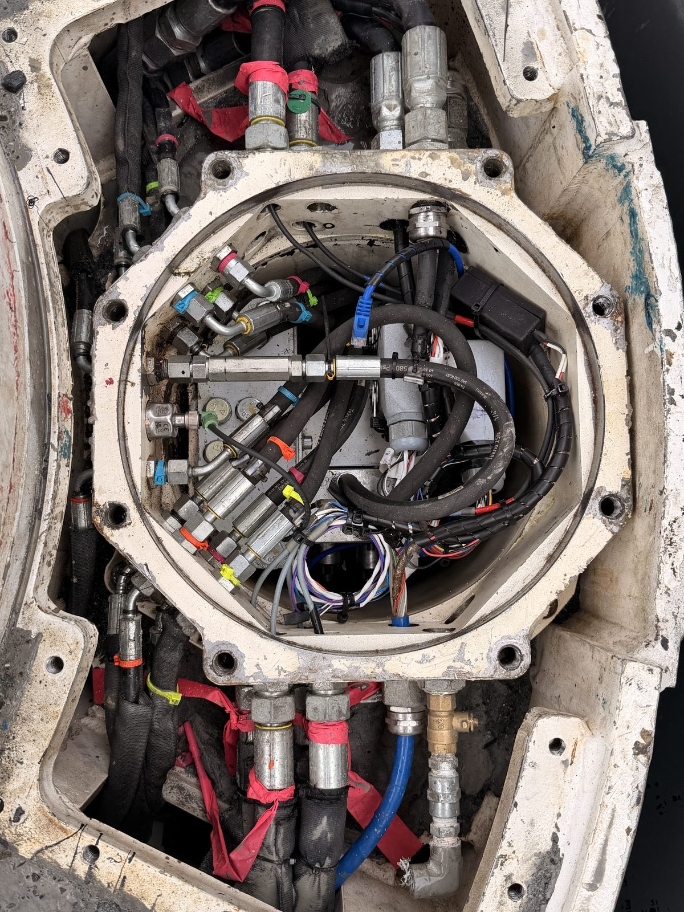
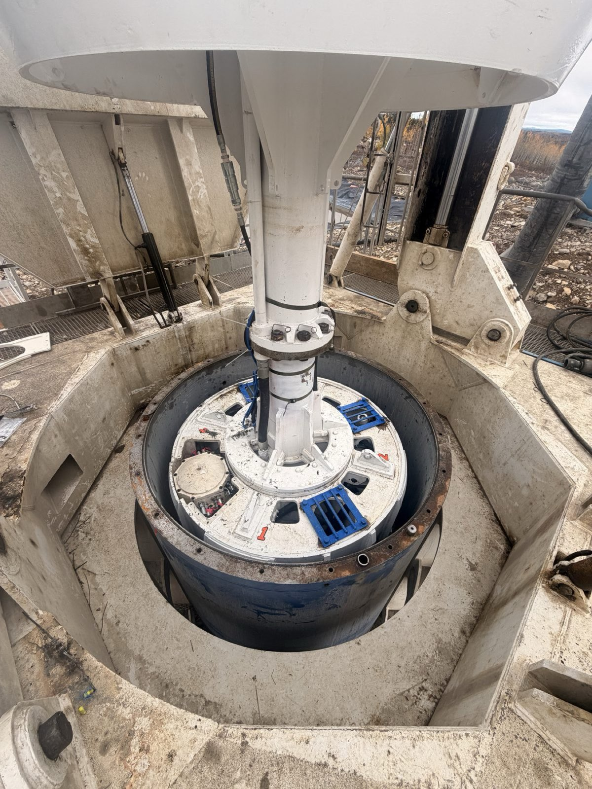
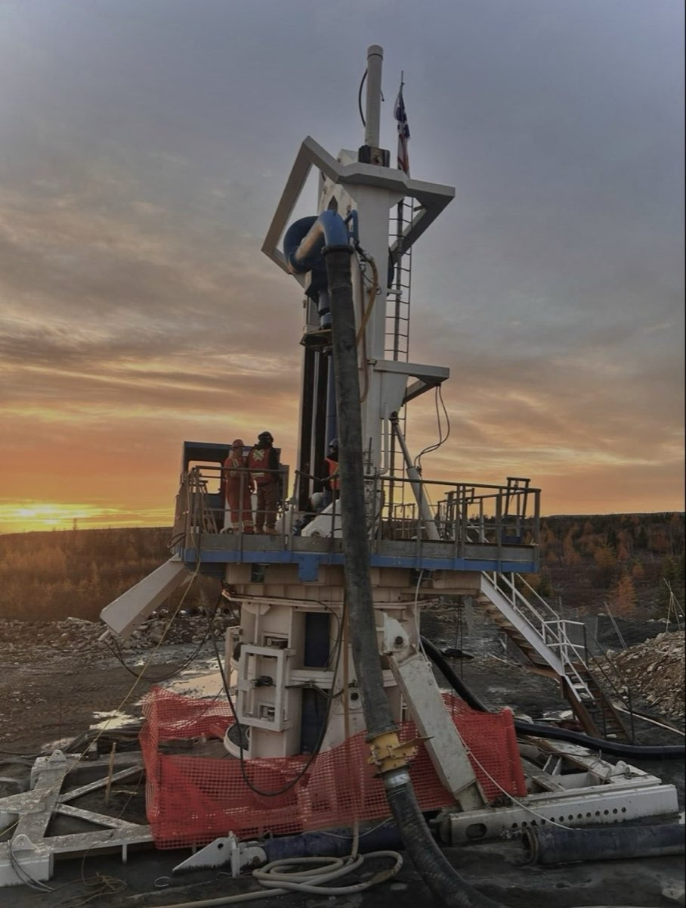
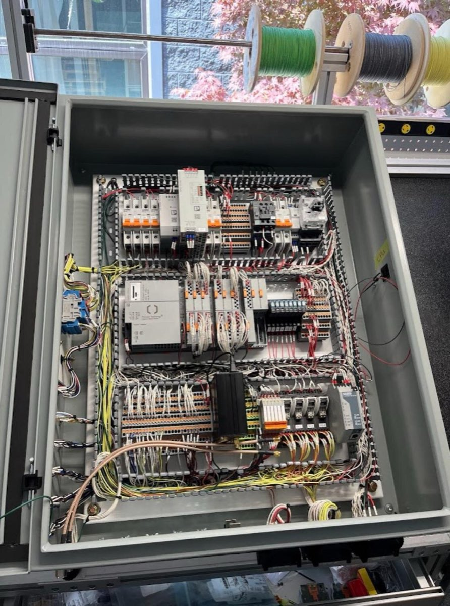
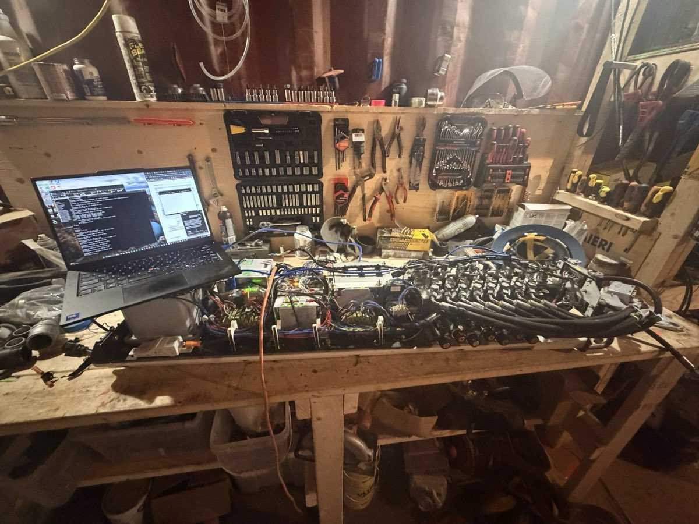
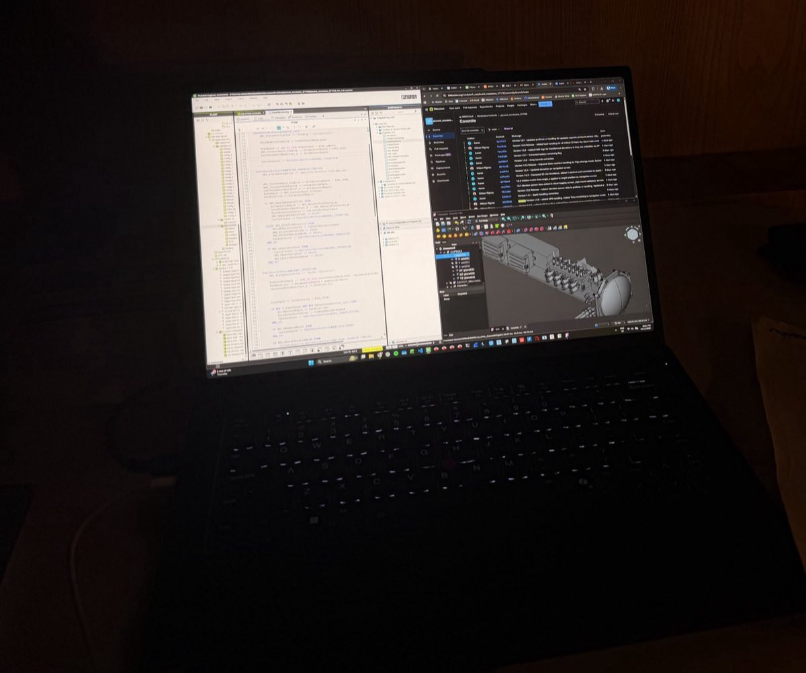

Innovation in Mining Technology
Control software and the operator interface for a steerable large-diameter drill that mines narrow ore veins from the surface, with no blasting and no underground development.


The system
Surgical mining extracts steeply dipping narrow veins by drilling large-diameter holes from the surface, up to 300 m deep, instead of developing an underground mine. A course-correction device behind the cutting head steers the hole to follow the vein, guided by a gyro-based navigation system.
That puts the control system at the centre of the method. It has to hold the trajectory in real time, hundreds of metres down, across a surface-to-downhole Profinet link, while the driller keeps full situational awareness from a single panel.
My contribution
Operator interface
- Built the operator HMI in PLCnext from first mockups through commissioning.
- A live navigation reticle maps drill-head position against the target path and tolerance zones, on a grid that rescales automatically as the hole deviates.
- Steering input is converted from operator XY commands to a force vector of direction and magnitude, saturated to the thrust the machine can actually deliver.
- Manual and positioning-control modes, calibration screens for depth and steering, and a state-machine observer screen for debugging in the field.
Control system
- Took over the surface control system ahead of commissioning and refactored the global state machine.
- Moved fault handling from boolean flags to coded alarms on the PLCnext alarm server, with operator acknowledgement.
- Wrote a depth-monitoring state machine for the incremental encoder that survives power cycles and handles pipe changes in software.
- Added a comms-loss timeout that retracts the steering pads on the bottom-hole controller, and exposed system variables over the web API for cloud logging.
Documentation
- Operator manual, installation manual, pre-commissioning plan, functional test plan and on-machine test plan.
In the field
Two commissioning trips to a remote mine site in Newfoundland. I ran IO validation and site acceptance testing, then supervised the first days of drilling with the steering system live, fixing issues as they came up.
When the downhole capsule failed mid-shift, I supported the root-cause analysis (a short that tripped a breaker), brought the control system back after the loss of downhole comms, and replaced a failed IO-Link pressure sensor with an analog one, updating scaling and Profinet handling to match.
Pilot preparation
For the 2026 pilot I audited the IO list against the codebase and the latest electrical schematics, integrated new vibration and flow sensors through IO-Link and their IODDs, and parameterized the IO-Link masters on the bench.
I also validated the surface-to-navigation-PC link with iperf and ran current-draw tests across valve control scenarios before the system shipped.
Photos



